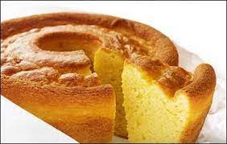

Yogurt Cake

How to make the best Yogurt Cake
Yogurt Cake, a simple, easy and delicious Snack or Dessert.
Ingredients
- 2 large eggs
- 3/4 cup (150g) granulated sugar
- 1 cup (226g) plain whole milk yogurt, regular or Greek
- 1/2 cup vegetable oil, canola oil or olive oil
- 1 teaspoon vanilla extract
- 2 teaspoons baking powder
- 1/2 teaspoon kosher salt
- 1 1/2 cups (192g) all-purpose flour
- Powdered sugar, for dusting
Steps
- Arrange a rack in the middle of the oven. Preheat the oven to 350°F. Grease a 9x5-inch or 8 1/2 x 4 1/2-inch loaf pan lightly with olive oil and line it with parchment paper, leaving about a 1-inch overhang on the long sides, to make a sling.
- Crack the eggs into a large bowl, add the sugar, and whisk vigorously until pale yellow and frothy, about 1 minute. Whisk in the yogurt, oil, and vanilla extract.
- To the bowl with the wet ingredients, whisk in the baking powder and kosher salt. Add the flour and stir with a rubber spatula until just combined and all of the flour is incorporated. (A few small lumps in the batter are fine, be sure to not overmix.)
- Transfer the batter to the prepared pan and use a spatula to spread it out evenly. Bake until the cake is lightly browned and a cake tester inserted into the center comes out clean with just a few crumbs, about 45 minutes.
- Transfer the pan to a cooling rack and let cool for 10 minutes before using the parchment paper sling to lift the cake out of the pan and onto the cooling rack to cool completely.
- Dust with powdered sugar, if desired, before slicing and serving.